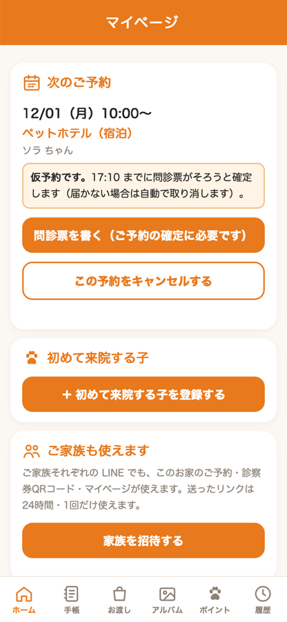
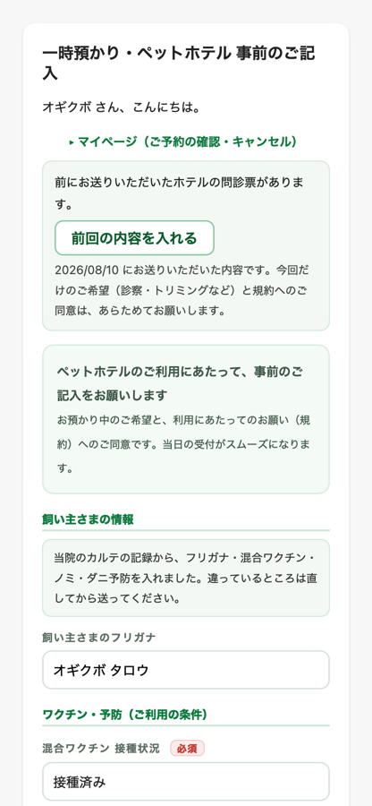
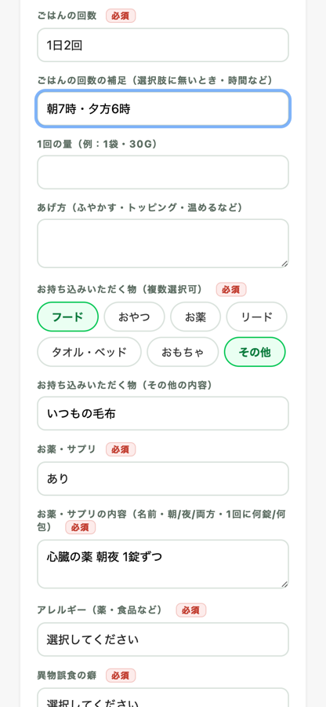
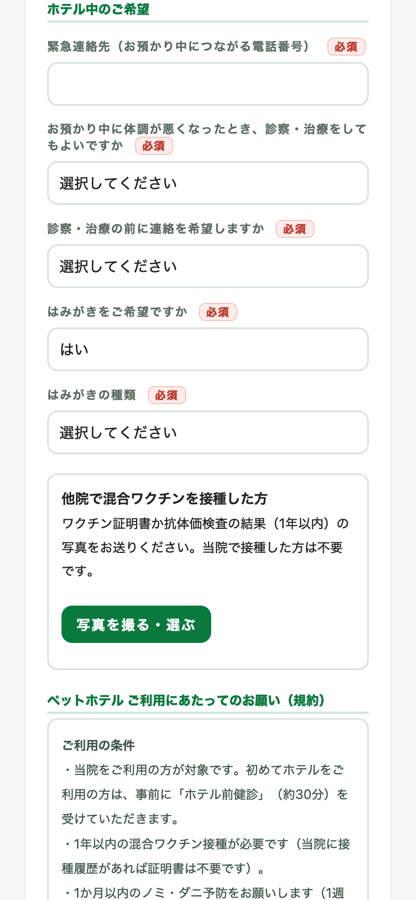
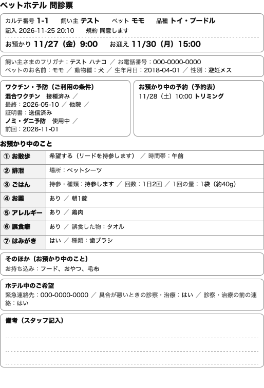

| 使う画面 | 開き方 |
|---|---|
| 予約表（予約管理アプリ） | 院内：https://giiv6wcx.lamarck-lan.com:14000 くわしい使い方は 予約管理アプリ 使い方ガイド |
| 入院カルテ（ホテル台帳） | くわしい使い方は 入院カルテ 使い方ガイド |
| 飼い主さまの LINE | 公式LINE のメニュー「ご予約」「マイページ」から。スタッフが操作する画面ではありません（見え方は 3章）。 |
パスコードは各アプリと同じです（院内掲示・不明なら院長へ）。
| だれ | すること |
|---|---|
| 飼い主さま | LINE で予約・問診票を送る。日にちの変更はお預かり日の前日まで、キャンセルはキャンセル料がかかる前まで LINE のマイページから。 |
| 受付・トリマー | 問診票を確かめる・印刷する。お預かり中のトリミング・診察の予約は、予約表に入れておくと台帳と印刷に自動で出ます。 |
| 自動 | 仮予約→確定・1時間で取り消し・カルテからの自動入力・台帳への取り込み・お預かり中の予約の表示。 |


| ところ | 見え方 |
|---|---|
| 仮予約 | マイページに「仮予約です。○時までに問診票がそろうと確定します」と出ます。 |
| 自動で入る欄 | 飼い主さまのフリガナ（カルテのフリガナ）・混合ワクチン（当院で最後に打った日・接種済み・当院）・ノミ・ダニ予防（当院で処方した予防薬が今月まで効いていれば「使用中」）。入った後も飼い主さまが直せます。当院に記録が無い欄は空のままです。 |
| 送った後に直す | マイページの「問診票を見る・直す（お預かり日の前日まで）」から、送った内容を見て直せます。お預かり当日からは「お電話にて」と出ます。直した内容は予約表・印刷・入院カルテの台帳に入ります。 |
| 前回の内容を入れる | 前にホテルの問診票を送った方には「前回の内容を入れる」ボタンが出ます。 |


| 質問 | 答え方（2026年11月25日〜） |
|---|---|
| ごはんの回数 | 選択肢（1日1〜3回）に加えて、補足を自由に書けます（時間・選択肢に無い回数など）。 |
| お持ち込みの物 | 「その他」を選ぶと内容を書く欄が出ます。 |
| 普段の排泄の場所（犬だけ） | 外・屋内・ペットシーツ・その他（その他は内容を書く）。猫には出ません。犬か猫かは当院のカルテから分かるので、飼い主さまには聞きません（分からないときだけ「動物種」を選んでいただきます）。 |
| お薬・サプリ | 「あり／なし」。「あり」なら内容が必須です（名前・朝/夜/両方・1回の量）。 |
| はみがき | 「はい」にすると「スタッフによるはみがき（550円・税込）」「獣医師によるはみがき（1,100円・税込）」から選びます。 |
| ホテル中の診察・トリミング | 問診票では聞きません。ご希望はお電話・受付・LINE の予約で予約表に入れてください（入れると台帳と印刷に出ます）。 |

| 載るもの | 中身 |
|---|---|
| 上の囲み | カルテ番号・飼い主（姓）・ペット・お預かり〜お迎え・記入日時 |
| お預かり中の予約（予約表） | その子の、お預かりの日〜お迎えの日に予約表に入っているトリミング・診察（再診・初診・健康診断・避妊相談など）・ワクチン・狂犬病・フィラリア・歯科検診。無ければ「入っていません」。 |
| 問診票の答え | 飼い主さまが送った答えの全部 |
| 備考（スタッフ記入） | 最後に手で書き込める枠（4行）があります。 |
| ところ | どう入るか |
|---|---|
| 台帳の欄 | 問診票の答えが自動で入ります。飼い主さまがマイページで問診票を直したときも、スタッフが触っていない欄は新しい内容に変わります（スタッフが直した欄は上書きしません）。ごはんの回数は補足とつないで、持ち込みは「その他（内容）」で入ります。 |
| 普段の排泄場所 | 犬の子は、事前記入の「普段の排泄の場所」が入ります（直せます）。 |
| はみがき | 飼い主さまが選んだとおり「先生はみがき」／「スタッフはみがき」が入り、お迎えの前に「帰る前」の予定が1本入ります（先生はみがきは入院ボードにも出ます）。 |
| ホテル中の予定（上の帯） | 予約表に入っているトリミング・診察・ワクチンなどが日付つきで出ます。済んだら✓。当日は一覧の札にも「今日 ○○」と出ます。 |
| 質問 | 答え |
|---|---|
| 仮予約のまま問診票が届かない | 1時間で自動で取り消しになり、飼い主さまに LINE が届きます（夜 21時〜朝9時は朝9時に）。お電話で内容を伺ったら、予約を開いて仮予約の帯の［確定にする］。 |
| 自動で入ったワクチンの日付が違う | 当院の会計の記録から入れています。他院で打った場合などは飼い主さまが直して送ります。届いた問診票の内容が正です。 |
| ノミ・ダニの「前回予防日」が空 | 当院で数か月分をお渡ししたときは、最後に飲ませた日が分からないので空けています。飼い主さまに書いていただきます。 |
| お預かり中のトリミングが印刷に出ない | 予約表にその子（枝番まで同じ診察券番号）の予約が入っているか確かめてください。取消・予約待ちは出ません。 |
| 「予約表を読めませんでした」と出た | 印刷はできます。お預かり中の予約は予約表で確かめてください。 |